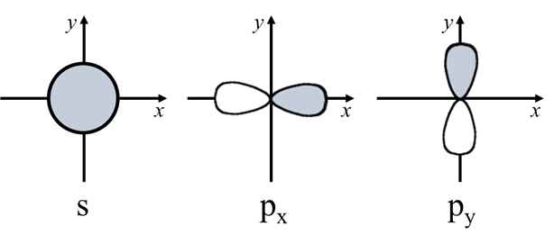

문제 1
우리가 사는 3차원 세상이 아닌, 2차원 세상에서는 아래 그림과 같이 원모양의 s 오비탈과 x축, y축으로 놓여있는 2개의 p 오비탈이 존재하게 될 것이다.

2차원 세상에서의 주기율표에는 2주기에 몇 개의 원소가 있으며, 이 2주기 원소들의 원자번호 증가에 따른 이온화 에너지 변화는 어떠한 경향성을 가지게 될지 자세히 서술하시오. (3점)
우리가 사는 3차원 세상이 아닌, 2차원 세상에서는 아래 그림과 같이 원모양의 s 오비탈과 x축, y축으로 놓여있는 2개의 p 오비탈이 존재하게 될 것이다.
2차원 세상에서의 주기율표에는 2주기에 몇 개의 원소가 있으며, 이 2주기 원소들의 원자번호 증가에 따른 이온화 에너지 변화는 어떠한 경향성을 가지게 될지 자세히 서술하시오. (3점)